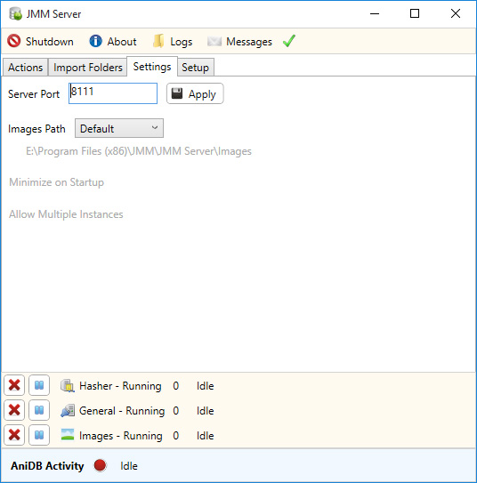

JMM Server - Settings Tab
As you might of guessed, the settings section allows you to configure certain settings for JMM Server.

Server Port - This is the port JMM Server will use, by default it's set to 8111.
Images Path - The path for any images download by JMM Server.
Minimize On Startup - If selected, will start JMM Server minimized.
Allow Multiple Instances - If selected, will allow you to run multiple instances of JMM Server.